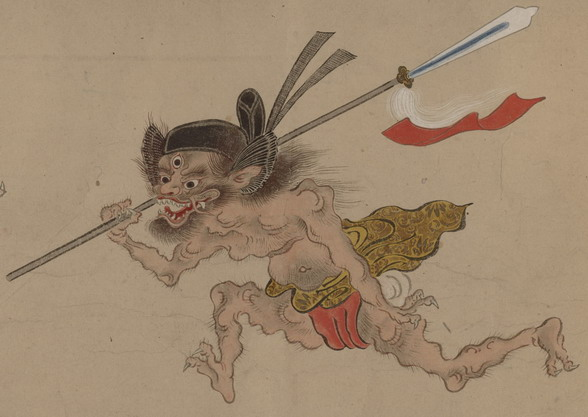

前方へ走り出す三つ目の鬼。冠をかぶり、矛を担いだ衛侍の姿で描かれている。体毛が濃く、口からは鯰のようなひげが生えている。赤い褌を締めている。冠には馬の尻尾の毛でできた半月形の飾りがついている。槍の先には赤い小旗と白い毛の房がつけられている。
出典：親書誌：U426_nichibunken_0154：妖怪絵巻；ヨウカイエマキ／日付：2010／資源識別子：U426_nichibunken_0154_0001_0000
Copyright (c)2010- International Research Center for Japanese Studies, Kyoto, Japan. All rights reserved.